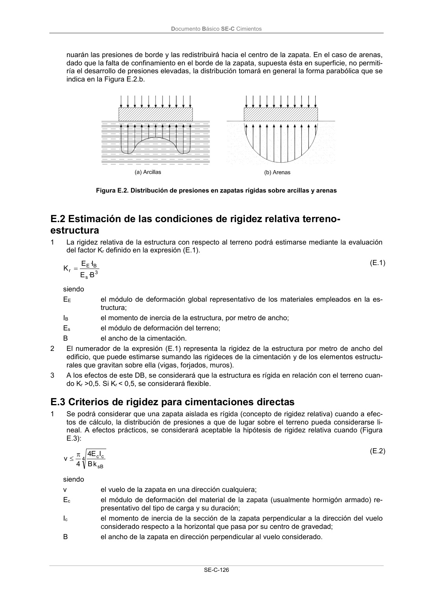

DB-SE-C Cimientos · edición 2019-12-20 · capa oficial
Documento DB-SE-C-oficial · SHA-256 del PDF a71133f4b0dca253e45ea3071c70f2a512354bcc5cd841bf89b1a502f567ac5e
Copia fiel del PDF fuente · Fuente oficial
Ficha de la disposición en la fuente oficial
Formatos: JSON del segmento · Markdown
E.2 Estimación de las condiciones de rigidez relativa terreno- estructura estructura 1 La rigidez relativa de la estructura con respecto al terreno podrá estimarse mediante la evaluación del factor Kr definido en la expresión (E.1). 3 s B E r B · E I· E K (E.1) siendo EE el módulo de deformación global representativo de los materiales empleados en la es- tructura; IB el momento de inercia de la estructura, por metro de ancho; Es el módulo de deformación del terreno; B el ancho de la cimentación. 2 El numerador de la expresión (E.1) representa la rigidez de la estructura por metro de ancho del edificio, que puede estimarse sumando las rigideces de la cimentación y de los elementos estructu- rales que gravitan sobre ella (vigas, forjados, muros). 3 A los efectos de este DB, se considerará que la estructura es rígida en relación con el terreno cuan- do Kr >0,5. Si Kr < 0,5, se considerará flexible.
